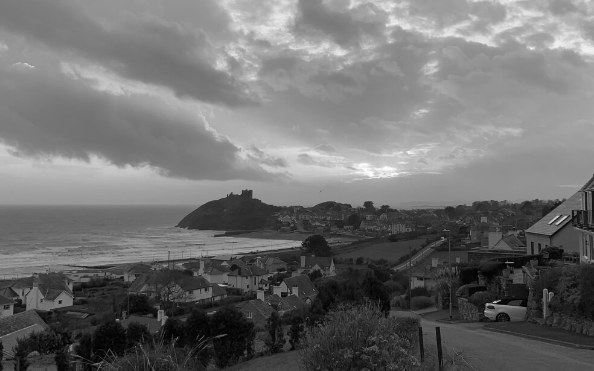
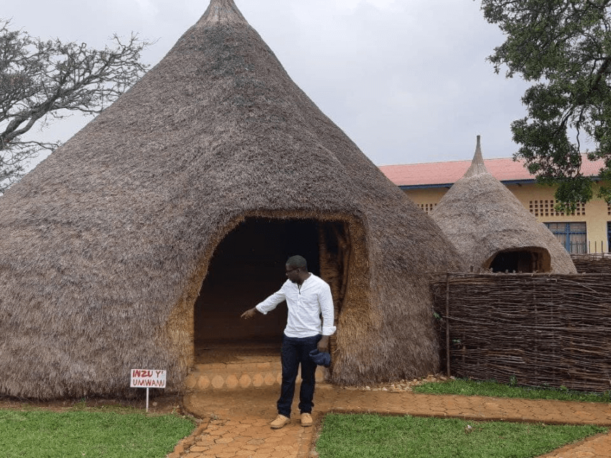
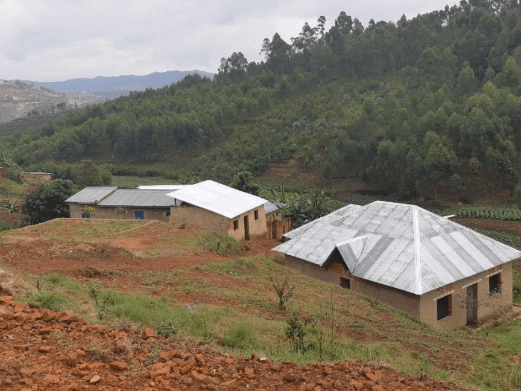
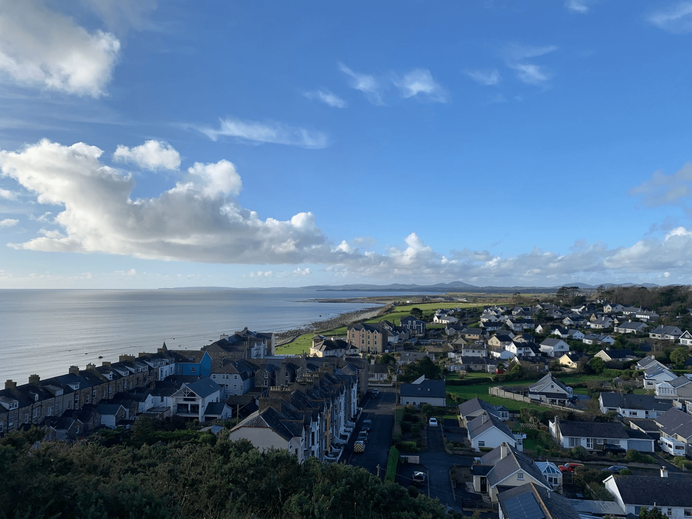
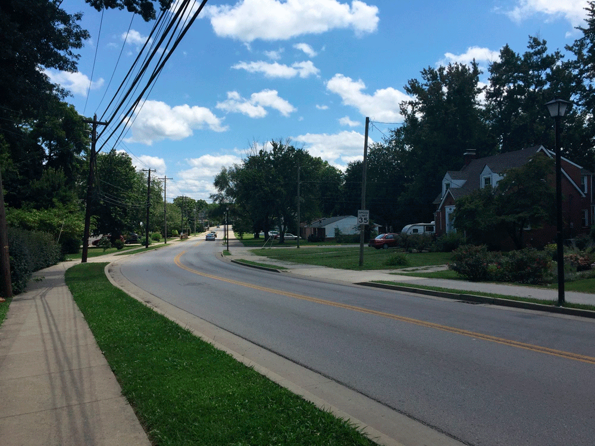
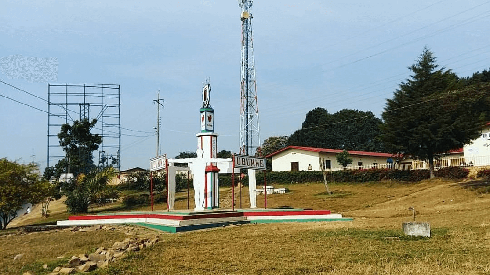
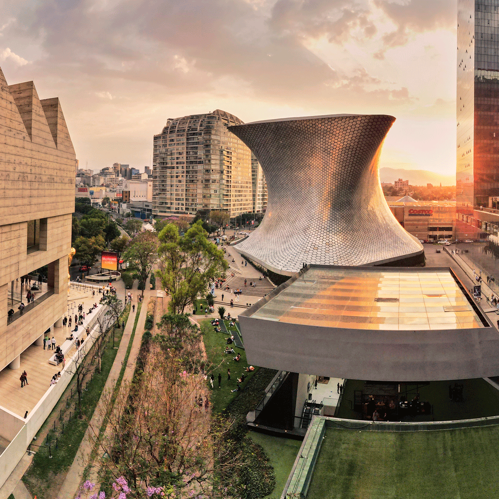

<!DOCTYPE html>
<html lang="es">
  <!-- <head>
    <meta charset="UTF-8" />
    <meta name="viewport" content="width=device-width, initial-scale=1.0" />
    <meta
      name="description"
      content="Un viaje épico de Kentucky a Burundi pasando por Gales y Ucrania"
    />
    <meta name="keywords" content="Patria, Viaje, Ciudades" />
    <meta name="author" content="Giusepe Velázquez" />
    <title>Triple Ten Art Gallery</title>
    <link rel="stylesheet" href="./pages/index.css" />
  </head>
  <body>
    <div class="page">
      <header class="header">
        <nav class="nav">
          
        </nav>
        <h1 class="header__title">De patria a patria</h1>
        <p class="header__subtitle">
          Un viaje épico de Kentucky a Burundi pasando por Gales y Ucrania
        </p>
        
      </header>
      <main class="content">
        <section class="intro" id="intro">
          <h2 class="intro__title">
            Conoce un poco mejor los lugares de los que proceden tus colegas en
            línea
          </h2>
          <p class="intro__subtitle">
            Todo ser humano es un artista, un ser de la libertad, llamado a
            participar en la transformación y reforma de las condiciones, el
            pensamiento y las estructuras que conforman e influyen en nuestras
            vidas.
            <span class="intro__author">— Joseph Beuys</span>
          </p>
          <p class="intro__text">
            La ciudad de TripleTen ha reunido a profesionales de diferentes
            rincones del mundo. Hoy, la Galería de Arte TripleTen se enorgullece
            de presentar historias y fotografías de algunas de las personas que
            dedican su tiempo y esfuerzo a hacer que los futuros profesionales
            de la tecnología de esta ciudad se sientan como en casa. Cada uno de
            nosotros tiene una historia única sobre el lugar del que procede. No
            dudes en añadir a nuestra colección tu propia historia y una obra de
            arte visual dedicada a tu ciudad natal. No importa de dónde seas,
            nos alegra que seas nuestro vecino.
          </p>
        </section>
        <section class="photo-grid">
          
          
          
          
          
          
          
          
        </section>
        <section class="places">
          <div class="places__content places__content_cricieth">
            <h3 class="places__title">Cricieth, Gales</h3>
            <div class="places__subtitle">
              <a href="#" class="places__artist-url">Artistas</a>
              <ul class="places__artist-list">
                <li class="places__artist-name">Steffan Warren, editor jefe</li>
                <li class="places__artist-name">
                  Kseniya Glagoleva, gerente de proyectos
                </li>
              </ul>
            </div>
            <div class="places__image-container">
              
              <div class="places__image-overlay"></div>
            </div>

            <div class="places__text">
              <p class="places__paragraph">
                Las ruinas medievales del castillo de Cricieth dominan la ciudad
                desde una roca que extiende sobre el mar. Se cree que fue
                construido por Llewelyn el Grande en el S. XIII. 800 años
                después, la autodenominada *Perla de Gales en las costas de
                Snowdonia*, se ha convertido en un popular destino turístico
                durante los meses de verano.
              </p>
              <p class="places__paragraph">
                A pocos pasos de camino al castillo, puedes disfrutar de los
                mejores helados del mundo en Cadwalader's, cuyo ingrediente
                secreto se rumorea que son algas marinas de la localidad. Otra
                cosa por la que es famosa Cricieth es por haber ganado el premio
                *Gales en flor* durante cinco años seguidos por sus
                espectaculares muestras florales alrededor de la ciudad. También
                vio nacer a David Lloyd George, el único galés que ha sido
                Primer Ministro del Reino Unido.
              </p>
            </div>
            <button class="places__purchase-button">
              Compra esta obra como NFT
            </button>
          </div>
          <div class="places__content places__content_berea">
            <h3 class="places__title">Berea, EE. UU.</h3>
            <div class="places__subtitle">
              <a href="#" class="places__artist-url">Artista</a>
              <ul class="places__artist-list">
                <li class="places__artist-name">
                  Travis Turner, autor y editor
                </li>
              </ul>
            </div>
            <div class="places__image-container">
              
              <div class="places__image-overlay"></div>
            </div>
            <div class="places__text">
              <p class="places__paragraph">
                Berea es una pequeña ciudad ubicada en la parte central de
                Kentucky. La ciudad está rodeada por hermosos bosques y campos.
                Es conocida como la capital de la artesanía del estado, y sus
                visitantes hallarán infinitas posibilidades para ir de compras:
                tiendas de joyas, velas y artículos de madera artesanales;
                galerías, talleres de vidrio y más. La ciudad celebra un
                festival anual que rinde tributo al "spoonbread", un platillo
                local hecho de pan de maíz y que se sirve con una cuchara de
                madera.
              </p>
              <p class="places__paragraph">
                Aunque, probablemente es mejor conocida por su universidad. El
                Berea College fue fundado en 1855 y fue la primera universidad
                sureña integrada racialmente, así como la primera en ser
                coeducacional. Algo que en cierta manera la hace única, es que
                no cobra colegiatura: cada estudiante recibe una beca del 100%.
              </p>
            </div>
            <button class="places__purchase-button">
              Compra esta obra como NFT
            </button>
          </div>
          <div class="places__content places__content_muramvya">
            <h3 class="places__title">Muramvya, Burundi</h3>
            <div class="places__subtitle">
              <a href="#" class="places__artist-url">Artista</a>
              <ul class="places__artist-list">
                <li class="places__artist-name">
                  Grevisse Kenguruka, editor técnico
                </li>
              </ul>
            </div>
            <div class="places__image-container">
              
              <div class="places__image-overlay"></div>
            </div>
            <div class="places__text">
              <p class="places__paragraph">
                Muramvya es una de las 18 provincias de Burundi. Durante la
                época del reino, Muramvya fue su capital; y en 2017, gracias a
                su paisaje cultural y natural, se añadió a la Lista provisional
                de patrimonio mundial de la UNESCO. Se encuentra ubicada en el
                centro de Burundi, entre las capitales política y económica del
                país.
              </p>
              <p class="places__paragraph">
                Su clima es más bien frío durante la noche, pero durante el día,
                podrías pensar que estás en el paraíso. A sus 2,665 metros
                (8,743 ft) sobre el nivel del mar, el Monte Teza es uno de los
                lugares más fríos de la provincia. Pero es justo esa brisa
                fresca la que da pie a una de las más grandes plantaciones de té
                y café del país, y que representa la mayoría de las
                exportaciones de Burundi.
              </p>
              <p class="places__paragraph">
                El Parque nacional de Kibira, una de las mayores reservas de
                vida silvestre para los simios, ocupa parte de cuatro
                provincias, incluyendo Muramvya. Este parque nacional se
                encuentra en las cúspides de las hermosas montañas de la
                Divisoria Congo-Nilo, cuyas alturas oscilan entre 1,550 y 2,660
                metros. Está lleno de hermosa vegetación, y es una fuente para
                los diversos ríos y arroyos que proporcionan agua alrededor del
                país.
              </p>
            </div>
            <button class="places__purchase-button">
              Compra esta obra como NFT
            </button>
          </div>
          <div class="places__content places__content_mexico-city">
            <h3 class="places__title">Ciudad de México, México</h3>
            <div class="places__subtitle">
              <a href="#" class="places__artist-url">Artista</a>
              <ul class="places__artist-list">
                <li class="places__artist-name">
                  Giusepe Velázquez, fotógrafo
                </li>
              </ul>
            </div>
            <div class="places__image-container">
              
              <div class="places__image-overlay"></div>
            </div>

            <div class="places__text">
              <p class="places__paragraph">
                El poniente de la Ciudad de México es una zona que combina
                historia, modernidad y naturaleza en un entorno único. Compuesta
                por barrios emblemáticos como Polanco, Lomas de Chapultepec y
                Tacuba, esta delegación es un reflejo de la diversidad y el
                dinamismo que caracterizan a la capital.
              </p>
              <p class="places__paragraph">
                También, alberga algunos de los monumentos más emblemáticos de
                la ciudad, como el imponente Castillo de Chapultepec, que domina
                desde lo alto el Bosque de Chapultepec, el mayor pulmón verde de
                la metrópoli. A su sombra, museos de renombre mundial, como el
                Museo Nacional de Antropología y el Museo Tamayo, invitan al
                visitante a sumergirse en el arte y la historia.
              </p>
            </div>
            <button class="places__purchase-button">
              Compra esta obra como NFT
            </button>
          </div>
        </section>
      </main>
      <footer class="footer" id="footer">
        <p class="footer__copyright">&copy; 2024. Giusepe Velázquez</p>
      </footer>
    </div>
  </body> -->
</html>
